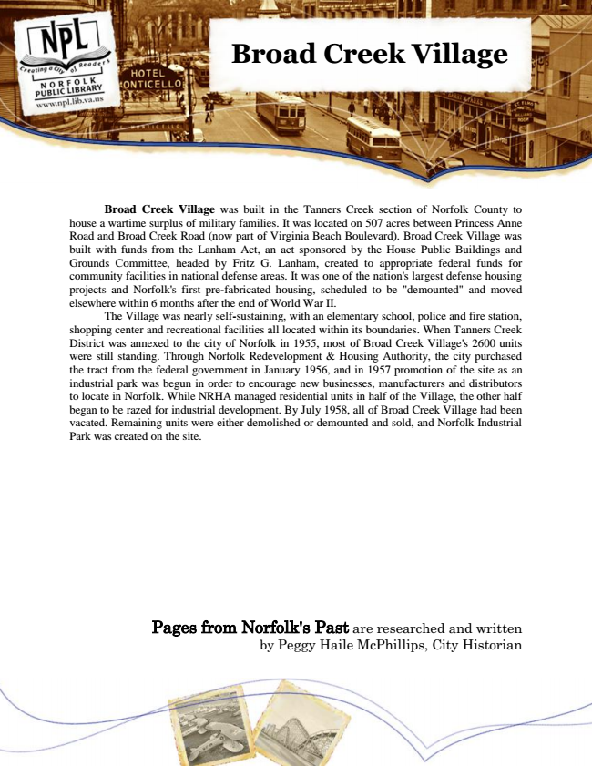

Broad Creek Village
Broad Creek Village was built in the Tanners Creek section of Norfolk County to house a wartime surplus of military families. It was located on 507 acres between Princess Anne Road and Broad Creek Road (now part of Virginia Beach Boulevard). Broad Creek Village was built with funds from the Lanham Act, an act sponsored by the House Public Buildings and Grounds Committee, headed by Fritz G. Lanham, created to appropriate federal funds for community facilities in national defense areas. It was one of the nation's largest defense housing projects and Norfolk's first pre-fabricated housing, scheduled to be "demounted" and moved elsewhere within 6 months after the end of World War II.
The Village was nearly self-sustaining, with an elementary school, police and fire station, shopping center and recreational facilities all located within its boundaries. When Tanners Creek District was annexed to the city of Norfolk in 1955, most of Broad Creek Village's 2600 units were still standing. Through Norfolk Redevelopment & Housing Authority, the city purchased the tract from the federal government in January 1956, and in 1957 promotion of the site as an industrial park was begun in order to encourage new businesses, manufacturers and distributors to locate in Norfolk. While NRHA managed residential units in half of the Village, the other half began to be razed for industrial development. By July 1958, all of Broad Creek Village had been vacated. Remaining units were either demolished or demounted and sold, and Norfolk Industrial Park was created on the site.
Pages from Norfolk's Past are researched and written by Peggy Haile McPhillips, City Historian